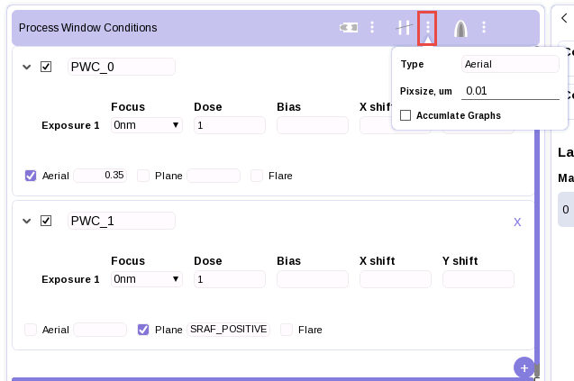
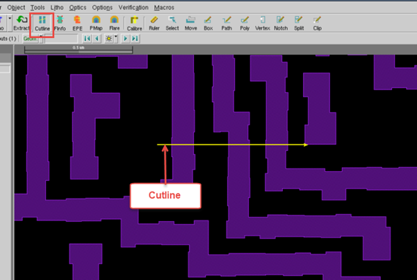
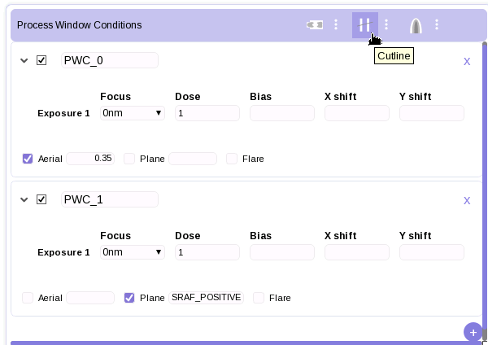
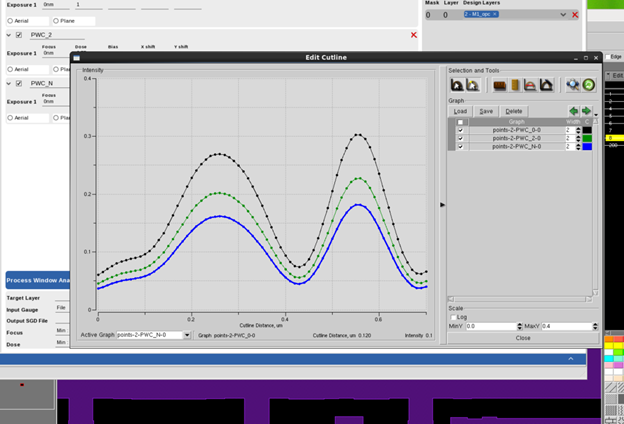
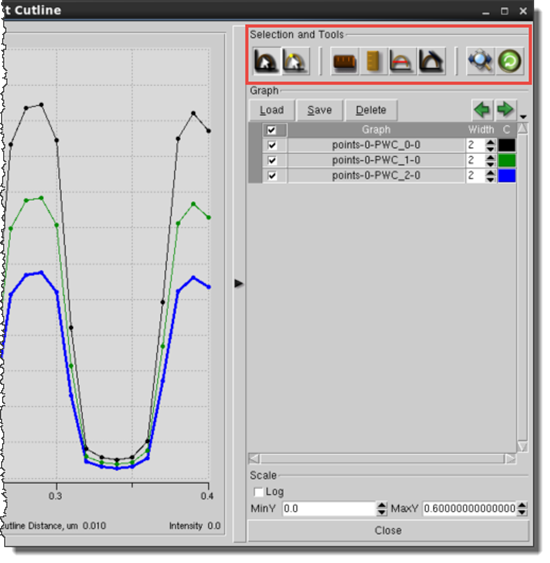
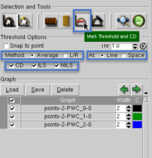
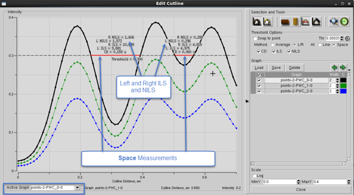
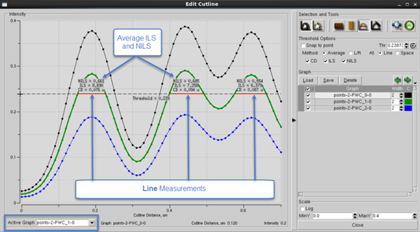

You can generate an intensity curve for
aerial or resist simulation modes, allowing you to compare intensity
across the edges of interest for one or more simulations.
Restrictions and Limitations
Procedure
- Configure
your intensity curve cutline simulation run options. Click on the
cutline options icon.
Figure 1. Intensity
Curve Options
Type —
Specifies the type of cutline simulation to run.
Aerial —
Dense aerial simulation.
Resist —
Dense resist simulation.
2D Resist —
Runs 2D resist profiling.
Note: 2D Resist profiling cannot be run on normal
optical models. It is only for 3D Resist models.
Pixsize —
Sets the simulation pixel size value of the scan in microns.
Accumulate Graphs —
Select this checkbox to add subsequent cutline simulations to the
same graph output. By default, the Cutline dialog box is refreshed
with a new cutline output each time you click the Cutline button
in the RFT v2.0 GUI.
- In Calibre
WORKbench, select a layer, click the Cutline button,
then draw a cutline arrow that crosses the edges of interest.
Figure 2. Draw
Cutline in Calibre WORKbench
Note: Calibre RFT v2.0 and Calibre RFT can both
simulate the cutline operation. When both are running, Calibre RFT
v2.0 settings take precedence.
- Run the
simulation by clicking the Cutline button.
Figure 3. Run
the Cutline Simulation
After the simulation completes, an Edit Cutline window
opens with the intensity curve of the cutline you specified in the
layout.
Figure 4. Intensity
Curve Output
- (Optional)
Adjust the cutline options as needed.
Figure 5. Edit
Cutline Window
Table 1. Edit Cutline
Window Options
Feature
|
Description
|
Select Graph
|
Enable to
activate a graph. You can have multiple graphs but only one can
be active at any time.
|
Select Graph Points
|
Enable to
select a point in the graph. The corresponding position in the cutline
is shown in the Calibre WORKbench layout view.
|
Horizontal Ruler
|
Enable horizontal
ruler mode. When enabled, you can also choose to snap to point.
|
Vertical Ruler
|
Enable vertical
ruler mode. When enabled, you can also choose to snap to point.
|
Mark Threshold and
CD
|
Similar functionality
to Calibre RFT. See “Determining the Threshold and CD of an Intensity Graph”
in the Calibre WORKbench: RET Flow Tool User’s Manual for
more details.
|
Mark Slope
|
Similar functionality
to Calibre RFT. See “Determining the Slope of an Intensity Graph”
in the Calibre WORKbench: RET Flow Tool User’s Manual for
more details.
|
Zoom All
|
Return to
full graph view. You can zoom in by clicking the right mouse button
and dragging from left to right. Zoom out by clicking the right
mouse button and dragging from right to left.
|
Rerun Cutline Simulation
|
Rerun the
simulation on a new cutline.
|
It is also possible to load, save, and delete graphs from the
Edit Cutline window, and specify other parameters of interest.
Results
After the simulation completes, a new window opens with the intensity
curve of the cutline you specified in the layout. There are additional
functions within the Edit Cutline window which allow you to edit
the intensity curve or rerun the simulation.
Examples
This example shows the steps to see the different data that the
Edit Cutline window can display.
Click the Mark
Threshold and CD button in the Edit Cutline window.
Figure 6. Mark Threshold
and CD
Ensure that
the following checkboxes are selected:
CD —
Displays critical dimension data
ILS —
Displays image log slope data
NILS —
Displays normalized image log slope data
Because you
selected ILS and NILS,
you must choose where to make the measurements using the method
controls. Select the Method: L/R radio button
to display the left and right slope values where the threshold crosses
the curve.
The default setting is Method: Average,
which averages the left and right slope values.
Select At:
Space to perform the computations on the space between
the layout feature locations.
The default is to use the At: Line, which
measures at the layout feature locations.
Click your
desired intensity threshold in the graph region of the Edit Cutline
window.
Note: If you need to be more accurate, you can
adjust the threshold value using the threshold box, Thr.
You can also reset the threshold value to that specified by the
PWC using the reset button to the right of the threshold box.
The graph changes to show the threshold you defined and the corresponding
values for CD, ILS, and NILS. The values reported relate to the
active graph. You can change the active graph using the Active
Graph dropdown list below the plot.
Figure 7. User-Defined
Threshold and CD for Space
Figure 8. User-Defined
Threshold and CD for Line